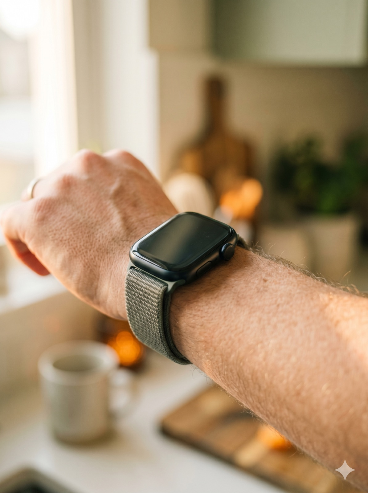

Your body whispers 36 hours before it shouts.
Before you feel sick, your body is already whispering. Prodromal is the first thing that listens — a private physician who has studied one body. Yours.
Get early access →For ten years, your fitness wearables have been writing a diary of your body.
Prodromal reads the signal — and teaches you to catch illness before it catches you.
36 hours is enough to change what happens next. Rest the night before. Take zinc early. Sleep nine hours. The illness that would have wrecked your week becomes the one you won.
Three quiet phases. The first two ask nothing of you.
We read what you already record.
Prodromal reads heart-rate variability, resting heart rate, respiration and skin temperature through Apple Health — the same numbers your watch has been quietly logging, day and night, for years. Nothing new to wear. Nothing new to remember.
Apple Watch · Oura · Whoop · Fitbit · Garmin — read privately, on-device where possible.

Your body's unique signature.
Over fourteen quiet days, Prodromal draws the baseline of you: how your heart behaves on a well-slept Tuesday, what your respiration does in deep sleep, what healthy looks like when the numbers are only yours. Nobody's average — just you, plotted carefully.
The baseline is continuous. It keeps learning, every night, for as long as you use it.
Specific. Timed. Personal.
When your signature drifts — a slow HRV fall, respiration creeping up in the small hours — Prodromal tells you in plain language, and tells you what to do. Exact doses. Exact timing. What to cancel tomorrow. What to keep. Nothing vague, nothing alarming.
Protocols are built from peer-reviewed literature. They are suggestions, not prescriptions.
The doctor who has studied one body.
Yours.Every illness teaches Prodromal your patterns a little deeper — how you get sick, what works for you, how fast you bounce back. After three, it knows things your family doctor, seeing you once a year, never could.
What the first families have been saying.
I started paying closer attention when something felt a little off. Having context for what I was feeling made me less anxious, not more.
For years my Apple Watch has shown me numbers I didn't know what to do with. Prodromal is the first thing that makes any of it feel useful.
As a junior doctor I came in skeptical. What won me over was seeing patterns in my own body I'd never have noticed on my own.
Two kids in daycare means illness is constantly in the house. A clearer picture of what's going on with each of us takes some of the chaos out of it.
Finals week. I noticed my signals drifting early and gave myself permission to slow down. Walked out the other side feeling like myself.
I travel 40 weeks a year. Understanding my own recovery patterns has changed how I plan around trips. Feels like having a private coach.
Individual experiences vary. Prodromal is not a medical device and does not diagnose or treat any condition.
Quiet signals, measured carefully, published widely.
Average HRV drop detected 48 hours before COVID-19 symptoms in a study of 31,000 participants wearing wearables.
Window in which resting heart rate and respiratory rate rise before the first noticeable symptom of upper-respiratory infection.
Average cost per sick day to a US employer in 2023 — before knock-on effects to customers, teammates, and families.
Honest, small, and built for the whole family.
- Full product access
- No commitment
- Cancel anytime
- Full product access
- Billed once a year
- Cancel anytime
- Full product for every family member
- Household Shield — coordinate your home's defense
- Shared Pantry Protocol
- Each member's health data stays private to them
$200 — average US primary-care visit.
$89.99 — one full year of Prodromal, for your whole family.
7-day free trial on every plan. Cancel in two taps before it ends — no charge.
Starts in about three weeks.
Be the first in the door. We'll email you the moment Prodromal hits the App Store.
Get early access →